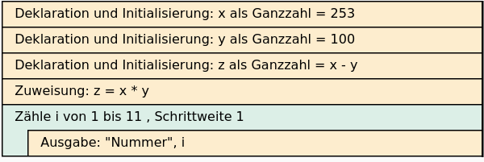
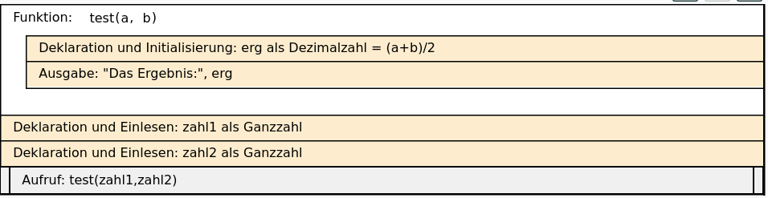

x = 253
y = 100
z = x - y
z = x * y
for i in range(1,11):
print("Nummer", i)Aufgabe 1:
Erstellen Sie ein Struktogramm zu dem folgenden python-Code
Lösung

Aufgabe 2:
Übersetzen Sie folgendes Struktogramm in python.

Lösung
# Lösung
def test(a,b):
erg = (a+b)/2
print("Das Ergebnis:", erg)
zahl1 = int(input("Erste Zahl:"))
zahl2 = int(input("Zweite Zahl:"))
test(zahl1, zahl2)Erste Zahl: 3
Zweite Zahl: 4Das Ergebnis: 3.5Aufgabe 3:
Erstellen Sie ein python-Programm, welches den Benutzern nach dem Namen, Gewicht (in kg) und der Körpergröße (in m) fragt, den Body-Mass-Index (BMI) berechnet und ausgibt.
Hinweis: BMI kann man nach dem folgenden Satz berechnen: BMI = Körpergewicht (in kg) / Körpergröße (in m)**2
Lösung
name = input("Ihr Name:")
gewicht = float(input("Ihr Gewicht in kg:"))
koerpergroesse = float(input("Ihre Körpergröße in m:"))
bmi = gewicht / koerpergroesse**2
print("BMI für", name, "beträgt:", bmi)Ihr Name: Julia
Ihr Gewicht in kg: 72
Ihre Körpergröße in m: 1.75BMI für Julia beträgt: 23.510204081632654Aufgabe 4:
Vervollständigen Sie den Code der beiden Funktionen so, dass das Programm den Zahlungsbetrag berechnet und als Rechnung ausgibt.
def berechne_betrag(preis, menge, rabatt_prozent):
# hier fehlt was ;-)
def erstelle_rechnung(zahlungsbetrag, kundennr, datum):
# hier fehlt was ;-)
zb = berechne_betrag(100, 2, 2)
erstelle_rechnung(zb, "kundennr-1234", "10.04.2025")Lösung
# Lösung
def berechne_betrag(preis, menge, rabatt_prozent):
betrag = preis * menge * (100-rabatt_prozent)/100
return betrag
def erstelle_rechnung(zahlungsbetrag, kundennr, datum):
print(30*"-")
print("Rechnung vom", datum)
print(30*"-")
print("Kundennummer:", kundennr)
print("Zu zahlender Betrag:", zahlungsbetrag, "€")
zb = berechne_betrag(100, 2, 2)
erstelle_rechnung(zb, "kundennr-1234", "10.04.2025")------------------------------
Rechnung vom 10.04.2025
------------------------------
Kundennummer: kundennr-1234
Zu zahlender Betrag: 196.0 €Aufgabe 5:
Entwickeln Sie ein Python-Programm, das die Volumenberechnung eines Quaders durchführt und zusätzlich erkennt, ob es sich bei dem Körper um einen speziellen Quader - nämlich einen Würfel - handelt. Anforderungen:
Das Programm soll den Benutzer nach drei Seitenlängen fragen.
Die Eingaben sollen als Gleitkommazahlen (float) verarbeitet werden.
Das Programm berechnet das Volumen des Körpers.
Das Programm soll überprüfen, ob alle drei Seiten gleich lang sind.
Je nach Ergebnis soll das Programm ausgeben:
"Das Volumen des Würfels ist gleich [Volumen]" (wenn alle Seiten gleich sind) "Das Volumen des Quaders ist gleich [Volumen]" (wenn mindestens zwei Seiten unterschiedlich lang sind)
Lösung
seite1 = float(input("Seitenlänge 1:"))
seite2 = float(input("Seitenlänge 2:"))
seite3 = float(input("Seitenlänge 3:"))
volumen = seite1 * seite2 * seite3
if seite1 == seite2 and seite2 == seite3:
print("Das Volumen des Würfels ist gleich", volumen)
else:
print("Das Volumen des Quaders Würfels ist gleich", volumen)Seitenlänge 1: 5
Seitenlänge 2: 5
Seitenlänge 3: 5Das Volumen des Würfels ist gleich 125.0Erweiterung (optional):
Erweitern Sie das Programm um eine Prüfung, die sicherstellt, dass nur positive Werte für die Seitenlängen eingegeben werden können.
Lösung
seite1 = float(input("Seitenlänge 1:"))
seite2 = float(input("Seitenlänge 2:"))
seite3 = float(input("Seitenlänge 3:"))
if seite1 <= 0 or seite2 <= 0 or seite3 <= 0:
print("Falsche Eingabe. Die Seitenlängen sollen > 0 sein.")
else:
volumen = seite1 * seite2 * seite3
if seite1 == seite2 and seite2 == seite3:
print("Das Volumen des Würfels ist gleich", volumen)
else:
print("Das Volumen des Quaders Würfels ist gleich", volumen)Seitenlänge 1: 3
Seitenlänge 2: -4
Seitenlänge 3: 5Falsche Eingabe. Die Seitenlängen sollen > 0 seinAufgabe 6:
Entwickeln Sie ein Programm, das 10 mal den Satz “Ich wiederhole zum x. mal” ausgibt, wobei x durch die aktuelle Wiederholungsnummer (1 bis 10) ersetzt wird.
Ich wiederhole zum 1. mal
Ich wiederhole zum 2. mal
...
Ich wiederhole zum 10. mal
Lösung
for x in range(1,11):
print("Ich wiederhole zum", x, ". mal")Ich wiederhole zum 1 . mal
Ich wiederhole zum 2 . mal
Ich wiederhole zum 3 . mal
Ich wiederhole zum 4 . mal
Ich wiederhole zum 5 . mal
Ich wiederhole zum 6 . mal
Ich wiederhole zum 7 . mal
Ich wiederhole zum 8 . mal
Ich wiederhole zum 9 . mal
Ich wiederhole zum 10 . mal